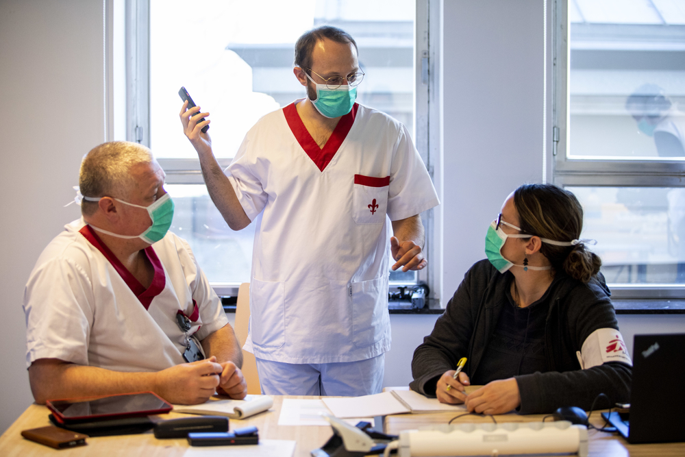

Lili-Marie Wangari, coordenadora de preparação para emergências de Médicos Sem Fronteiras (MSF) no Quênia, está trabalhando na resposta da organização ao surto de COVID-19 no país. Estamos prestando suporte a um centro de saúde e às atividades de saúde comunitária em Kibera, um dos maiores conjuntos de favelas da África. Atualmente, existem 320 casos do novo coronavírus no Quênia, a maioria deles na capital, Nairóbi. Lili-Marie conta como é o seu trabalho, que ajuda a proteger algumas das pessoas mais vulneráveis da cidade.
“Assim que ouvimos falar da COVID-19, fomos até o Centro de Saúde Kibera do Sul. É um local que MSF construiu e manteve, até repassar a administração, em meados de 2017, ao Ministério da Saúde.
Kibera é uma comunidade que conhecemos bem. Nós trabalhamos lá há mais de 25 anos. Respondemos à crise do HIV/Aids nos anos 80, quando cuidávamos de pessoas em casa, fizemos campanha pelo acesso ao tratamento e fomos os primeiros médicos a fornecer medicamentos antirretrovirais num serviço de saúde pública do Quênia.Por conhecermos Kibera, sabemos como um surto do novo coronavírus pode ser catastrófico na comunidade.
Burkina Faso: como a epidemia de COVID-19 piorou a crise humanitária
O país está enfrentando uma das maiores crises humanitárias do mundo, que se desenvolve hoje a uma velocidade exponencial.Mais de 800 mil pessoas, de acordo com a OCHA, foram deslocadas pela violência em Burkina Faso. O sistema de saúde é particularmente frágil. Teme-se que esta situação se deteriore ainda mais com os picos sazonais de desnutrição e malária, que estão se aproximando. Como se não fosse o bastante, o país registra um dos maiores números de casos confirmados do novo coronavírus na África Subsaariana. Conceder acesso a cuidados básicos de saúde para a população local e deslocada já era difícil nas regiões mais vulneráveis do país, devido à crescente insegurança. Agora, a situação é ainda mais complicada em algumas áreas.Djibo, uma cidade na região do Sahel, que tinha 36 mil habitantes no último censo de 2012, hoje abriga mais de 140 mil pessoas deslocadas. A violência forçou quase 840 mil pessoas a deixar suas casas nos últimos meses. O acesso aos serviços de saúde, já difícil, deteriorou-se ainda mais: em todo o país, mais de cem centros de saúde foram fechados nas áreas afetadas, enquanto outros operam com capacidade mínima, devido à insegurança.
Médicos Sem Fronteiras (MSF) está presente na região desde março de 2018, trabalhando no centro cirúrgico e no pronto-socorro do centro médico em Djibo, a fim de melhorar a qualidade e o acesso aos serviços de saúde secundária para deslocados internos e população anfitriã. Desde então, MSF também estabeleceu dois postos de saúde avançados para facilitar o acesso à atenção de saúde primária, bem como atividades de distribuição de água, para ajudar a população – deslocada e anfitriã – a lidar com a situação.
Corrida contra o tempo para combater a pandemia de COVID-19
As equipes da organização médico-humanitária internacional Médicos Sem Fronteiras (MSF) estão correndo contra o tempo para responder à pandemia de COVID-19 nos mais de 70 países onde mantemos programas, enquanto abrimos projetos em novos países à medida que estes se tornam focos críticos da pandemia.
Nos nossos projetos, as equipes de MSF vêm aprimorando as medidas de prevenção e controle de infecções para proteger pacientes e profissionais e impedir a disseminação do novo coronavírus. É absolutamente crucial proteger os profissionais de saúde e os pacientes nos centros de tratamento da COVID-19 e em todos os outros centros que fornecem serviços vitais de saúde, para impedir que as instalações disseminem o vírus ou sejam obrigadas a fechar as portas.
Os sistemas de saúde no mundo inteiro precisam urgentemente de equipamentos de proteção individual (EPI), para que serviços médicos fundamentais possam continuar sendo prestados. A escassez global de EPIs já era uma realidade para os profissionais de saúde na maioria dos países onde trabalhamos, em que faltam itens como máscaras e aventais e ferramentas médicas como testes. O acesso a equipamentos de proteção, testes de COVID-19, oxigênio e medicamentos torna-se cada vez mais urgente à medida que a doença se espalha em países com pouco acesso a essas ferramentas.

Comunicando Crises Humanitárias em Florianópolis.
Florianópolis recebe Seminário de Comunicação sobre como fazer uma boa cobertura de ajuda humanitária.Comunicando Crises Humanitárias - como cobrir conflitos armados, desastres naturais e epidemias” é o tema do seminário de comunicação que será realizado em 30 de novembro, das 9h às 13h, no auditório do SESC Prainha, no centro de Florianópolis. O evento, promovido pela organização internacional Médicos Sem Fronteiras (MSF), é voltado para jornalistas e estudantes de Comunicação, Cinema e Relações Internacionais. As inscrições serão encerradas na quinta-feira, dia 28 de novembro. Os formulários serão recebidos até às 23h59 e as confirmações serão enviadas por e-mail no dia 29 de novembro, na parte da manhã.
O seminário traz informações sobre a comunicação que MSF desenvolve nas principais crises humanitárias onde atua, exibe vídeos de depoimento de jornalistas que cobriram episódios marcantes em campo, e oferece uma oportunidade de bate-papo com profissionais de ajuda humanitária que viveram essas experiências de perto.
O evento também conta com a participação de jornalista convidado, que irá fazer, na sessão Talk-Show com MSF, uma entrevista com a enfermeira catarinense Marina Barardi, que retornou de Guiné-Bissau em maio deste ano, após seis meses no projeto, e com o profissional de logística Mario Braga, que esteve na República Centro-Africana.
O objetivo do evento é compartilhar experiência de campo, entender contextos e conceitos e dar dicas sobre como promover uma cobertura diferenciada mesmo com restrições orçamentárias nos diversos meios de comunicação e plataformas de mídia.